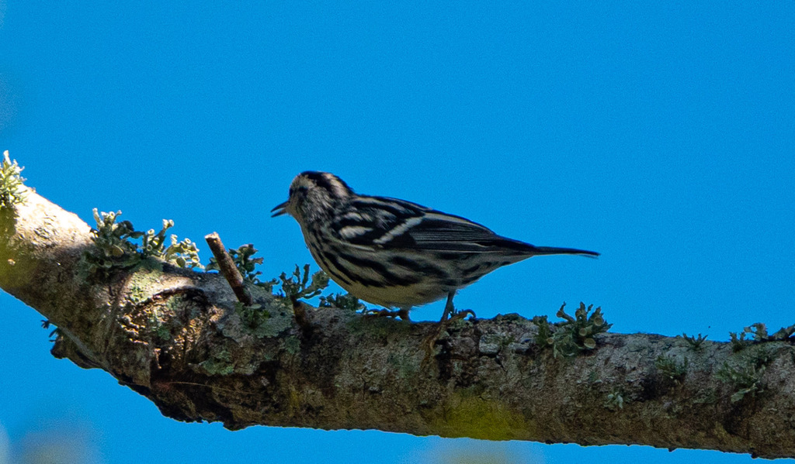

- The only North American warbler that forages like a nuthatch, creeping up, down, and sideways along tree trunks and thick limbs to probe bark crevices for hidden insects — no other warbler in the family regularly works the bark this way.
- Built for it: the Black-and-white Warbler has an unusually long hind toe and claw — nearly as long as its entire leg — plus shortened tarsi and a long, slightly curved bill, all evolved for gripping bark and probing deep into crevices.
- Its song is a thin, high-pitched, repetitive weesy-weesy-weesy, famously likened to a squeaky wheelbarrow. Once you learn it, you will recognize this bird by ear long before you spot it on the trunk.
- Its genus name Mniotilta means 'moss-plucking' — a nod to how it picks prey from mossy, lichened bark. Despite spending almost all its time high on trunks, it nests directly on the ground.
A boldly pin-striped black-and-white warbler about the size of a chickadee, with a flat head, long wings, and a slightly downcurved bill. Its creeping behavior on tree trunks is its best field mark — no other warbler does this routinely.
Adult males have a black throat and a solid black cheek patch, giving them a bandit-mask look. Females and immatures show a white to cream throat and a grey or buffy cheek — paler overall, with less bold streaking on the flanks.
The Blackpoll Warbler is also black and white but sports a solid black cap and never creeps on trunks. The tree-creeping behavior of the Black-and-white is the clincher — if it is working the bark, it is this species.
The song is a thin, high-pitched, repetitive weesy-weesy-weesy — a series of wee-see phrases repeated six or more times in a chanting rhythm, famously compared to a squeaky wheelbarrow. The absence of a complex ending helps separate it from other high-pitched warbler songs. Both sexes give a sharp chit or pit call; a softer seet-seet flight call is also heard.
Scan the trunks and thick limbs of mature trees rather than the outer foliage. Watch for a small, hyperactive bird moving in zigzag spirals around the bark — up, down, and sideways — rather than hopping branch to branch. Bold black-and-white stripes run head to tail; the striped crown with a white central stripe is visible even at a distance.
Primarily insects and spiders gleaned from tree bark: caterpillars (including moth and butterfly larvae), bark beetles, wood borers, ants, flies, leafhoppers, aphids, and daddy longlegs. Occasionally catches insects on the wing or visits sapsucker holes for insects attracted to the sap.
Scan the rough bark of mature oaks and other large native trees in the park's mid-story and canopy. Look at the trunk and main limbs, not the leaf tips — this bird works the bark, not the foliage. It often forages surprisingly low on the trunk, so check at eye level as well as overhead.
Active during daylight hours year-round during its Florida stay. Fall arrivals can appear as early as mid-August; numbers build through October and peak in winter. Spring departure begins by March, with most birds gone by late April. Best detected by its squeaky weesy song on cool, still mornings when sound carries well through the trees.
Observe and enjoy.

- © Rob Carr (CC-BY-NC), via iNaturalist